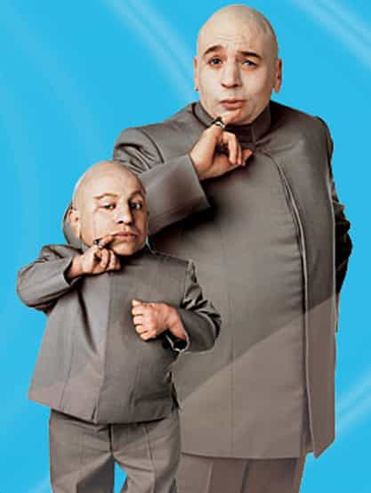

Daryush "Roosh" Valizadeh created ROK in October 2012. You can visit his blog at RooshV.com or follow him on Twitter and Facebook.


As I get older, I’ve become more mindful about how to teach my brothers to grow up as strong men. I have been examining the environment they’re in and trying to find ways to replace negative influences in their lives with positive ones. While I barely see them enough to have a huge influence, the time I have spent with them has given me a basic plan for how to raise my own son in the future. Here are five guidelines I will use:
A lot of people think that having children is like possessing little slaves that do what you command them at all times, but humans by their nature have a resistance to being controlled and told what to do, especially children. Not only that, but when you force your son to do something he isn’t sure is right, he starts building resentment against you. This resentment, if too high, will result in him becoming a rebellious teenager who goes completely against your wishes.
Instead of commanding your son on what to do, give him an opportunity to copy your behavior. Do you want your son to be athletic? Then be athletic with him. Do you want your son to read more? Then read with him. Do you want your son to study history? Then tell him interesting historical stories that capture his imagination. Monkey see, monkey do, with both negative behaviors and positive ones. Compare that to commanding your son to exercise while you watch TV, or telling him to read while you surf the internet. Why should he do it if dad doesn’t?
Use the fact that children love copying their parents. If little Johnny sees his dad lift weights at home several times a week, it won’t be surprising when he picks up a weight and mimics dad. By simply doing the activities you want your son to do, you may never have to command him to do anything. Be the role model that your son needs instead of a strict schoolmaster who just wants to dictate commands.
What are some things that you don’t want your son to become? Fat, homosexual, lazy, or hedonistic. If you want your son to eat well, don’t bring junk food in the house and don’t get lazy—or enable a lazy wife—by taking him to McDonald’s for a “quick” meal. If you don’t want him to be homosexual, have an appreciation for feminine beauty, allow him to see the loving bond you have with your wife, and don’t leave him alone with pedo-loving liberals. If you don’t want him to be a bum, don’t have television and video game systems in the house that enables his worst traits. If you don’t want him to be hedonistic, show him the fruits of your hard work and how little rewards and pleasures in the right doses can lead to satisfaction instead of addiction.
While it’s impossible to prevent your son from making mistakes later in life that hurt him, you can show him how his father was able to achieve a happy and stable life by leading a life of discipline and moderation. If you have vices or addiction problems, there’s no way you can expect your son to abstain from them either. Your son will be a reflection of not just want he hears from you in terms of right and wrong, but what he sees as well, even when you think he’s not looking.
You can’t make a boy practice a hobby or sport that he doesn’t like. If you do, he will resent you and soon come to hate whatever you forced upon him. Instead, expose your boy to a range of masculine activities and find what he insists on doing himself with hardly any encouragement. If your son, on his own time, is learning or practicing outside of the designated time, that means he has found a passion. As long as it’s not doll dress-up, you should encourage it and give him the space and resources to develop it.
My younger brother is in university. I’ve encouraged him to take on weightlifting and he has done it, but he’s reluctant to work out unless I’m on his ass about it or he has someone to work out with. I don’t blame him, because lifting weights is not as fun as playing video games.
My youngest brother is different. Once I taught him how to lift weights, he became addicted to it and worked out on his own, without anyone else’s insistence. For his young age, he’s becoming a monster, one of the strongest boys in his class, and even when he’s sick, he still wants to lift. Would it be smart to push the older brother into a new fitness hobby? Probably not, but my youngest brother would definitely respond to it.
Modern fathers want their sons to only do “useful” activities that could lead to a good corporate job. While that is understandable, it’s the wrong approach. Any passion that your son takes on will teach him the work ethic to apply to just about anything. Making money will be trivial to him after he’s spent his 5,000 hours on a hobby he loves and which he has taken to a high level.
When I was in university making basic web pages for fun, I couldn’t at all predict that that skill would develop into the web empire I have today, but it has and I’m thankful my parents didn’t forbid my hobbies as a “waste of time” when it allowed me to build the business I have now.

While your son may be similar to you, he is not your little clone. Accept that he will be a unique person with different strengths and weaknesses than you instead of forcing him into a box of your choosing. Many fathers have been disappointed in their sons merely because they were not like them, but the fact that he has 50% different genetics than you and raised in a wholly different environment with different experiences suggest that you should be surprised if he is even a quarter the same.
A better method is to find who your son is by observing him in various situation and challenges. Maybe he’s abnormally frightened of insects but doesn’t get scared of heights. Maybe he’s a sore loser in games but can deeply focus on difficult tasks. Maybe his general athleticism is weak but he has powerful strength.
Parenthood is less about shaping a mound of clay than identifying a person who already exists and who needs to find himself, his nature, and his place in the world. The answer may disappoint you, especially since not every man born will accomplish great things, but whatever his nature is, it’s the father’s responsibility to find it while blocking damaging influences that want to hurt him.
To understand your son means you already understand yourself. If you don’t know who you are, and live life as a confused, conflicted man, chances are your son will be that way as well, and mentally suffer as an adult.
I’m seeing a growing trend of parents neglecting their children by giving them electronic devices to play with. Even worse is that I’m regularly seeing parents glued to their iPhone when a child was tugging at them for attention. I completely understand that children require huge amounts of time that gets tiring, but leaving your children to be raised by games, pedo Hollywood, and Gaysame Street means you’re essentially outsourcing your parental duties and letting outside influences install beliefs into your child that will turn him into a degenerate faggot socialist who suffers from clinically low testosterone.
By default, your son will love you and his mother more than anything else in the world. You won’t be able to tell when he throws a tantrum, but there is no one else he rather be with. So be with him. Include him in your daily chores. Tell him how your day went and ask him the same. Let him share his silly stories without your interrupting or breaking eye contact. Show him how important he is and that he has a father in life not just in name only.
Don’t confuse my advice here with indulging all of your son’s whims and sacrificing your own well-being to be some sort of clown to keep him constantly entertained. Instead, just be there for him when he wants to spend time with you and don’t let him feel that he has to compete with your smartphone, because you will be hurt when he grows up and decides that he doesn’t have the time or attention to give you. The type of man your son becomes will depend on the influences he’s exposed to when he’s growing up; you might as well be the biggest one.
I share this advice as a man who doesn’t have children, but one who has thought about it deeply. I’ve examined the parental strategy of my own father along with my attempts to positively shape the lives of my brothers. What you see above is the strategy I will use if I have a son tomorrow. While I’m sure there are flaws in what I’ve shared, along with any other parental method, it’s one that I confidently feel will allow a son of mine to hit his absolute potential, no mater how different he may be from his dad.
Just don’t ask me quite yet about what I would do if I were to have a daughter.
 If you like this article and are concerned about the future of the Western world, check out Roosh's book Free Speech Isn't Free. It gives an inside look to how the globalist establishment is attempting to marginalize masculine men with a leftist agenda that promotes censorship, feminism, and sterility. It also shares key knowledge and tools that you can use to defend yourself against social justice attacks. Click here to learn more about the book. Your support will help maintain our operation.
If you like this article and are concerned about the future of the Western world, check out Roosh's book Free Speech Isn't Free. It gives an inside look to how the globalist establishment is attempting to marginalize masculine men with a leftist agenda that promotes censorship, feminism, and sterility. It also shares key knowledge and tools that you can use to defend yourself against social justice attacks. Click here to learn more about the book. Your support will help maintain our operation.
This article was originally published on Roosh V.
Don’t Miss: 5 Things I Learned From Becoming A Father